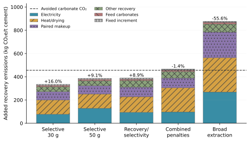
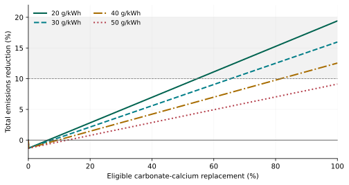

Calculation Supplement for Basalt-Derived Calcium
Paired Carbon Budget, Coupled Operating Specification and Reproduction
S1 Scope and relationship to the paper
This supplement explains the carbon-budget calculations for one tonne of equivalent factory-gate cement at clinker fraction 0.914. All coproduct and carbon-removal credits and allocation of burdens away from cement are zero. Shared kiln-energy demand is held equal; no unverified thermal saving is credited. The paired comparison applies the same energy-supply assumptions to both routes and accounts separately for calcium-recovery burdens. It is an engineering comparison with explicit assumptions, rather than a measured paired-plant LCA or a complete process simulator.
S2 Equations and units
Recovery masses q and M are tonnes per tonne cement; emissions are kg CO₂e/t. Use C=480 reported calcination, selected eligibility e=0.95, D=eC=456, and ρ=44.01/56.077. Then q=D/(1000ρ)=0.5810296 t CaO-equivalent. This is inferred accounting calcium, not a measured assay. For replacement f, grade g and overall usable recovery η:
mCaO=fq; M=mCaO/(gη); nCa=10⁶mCaO/56.077 mol.
A=2λnCa; N=A/y; mNaOH=N×39.997/1000 kg.
VA=A/(1000cA); VB=N/(1000cB) m³.
Welec=mNaOH×SEC×u+M×wgrind+f×waux kWh.
A is required acid equivalents and N generated base equivalents on the selected acid/base yield basis y=0.90. λ covers co-release/excess demand relative to two protons per recovered Ca; it must be measured from the complete circuit. The principal λ is 1.30. Full paired stack electricity is charged once per generated NaOH-equivalent; acid and base SEC normalizations from the same stack are not additive. The yield allowance increases nominal splitting duty, and fresh makeup is charged in addition, without reducing nominal duty or assigning surplus base a credit. This conservative accounting convention is not a resolved chloride/impurity balance.
Hgross=[(VA+bVB)cw+Mcrock]ΔT/1000 GJ.
Hnet=Hgross(1−h).
mdry=mCaO×74.093/56.077; mwater=mdry(1/s−1) tonnes.
Hdry=mwater×2.4/ε GJ; Hextra=(Hnet+Hdry)×1.10.
Solution density is approximated as 1 t/m³. All acid and the selected fraction b=0.50 of base solution are heated; cp values are 4.18 and 0.84 MJ/(tK). h denotes sensible-heat recovery. The isolated cake is a Ca(OH)₂-equivalent abstraction, with selected solids s and dryer efficiency ε=0.80. Evaporation allowance is 2.4 MJ/kg water. The final 1.10 factor adds heat losses. Hextra is the modeled supplied recovery-heat duty after these process efficiencies; an actual heat carrier and upstream conversion must be assigned on that boundary. Bound water and actual precursor firing must be reconciled before claiming an integrated process result.
P=WrecIe+HextraIp+mNaOHℓFpair+MFother+MFcarb+J+δU. (S1)
B=C+QkIk+WcIe+U; Ebas=B−fD+P; R=(fD−P)/B. (S2)
Ie,max=[fD−Pnon-electric−r(C+QkIk+U)]/(Wrec+rWc). (S3)
Ie is kg CO₂e/kWh, Ip per GJ supplied recovery heat and Ik per GJ kiln fuel input on an LHV basis. They are selected separately; Ip=Ik=70 is numerical scenario parity, not equal heat quality. Qk=3.5 × 0.914=3.199 GJ/t cement; Wc=100 kWh/t; U=50 kg/t common-other burden. δU is any noncancelling burden beyond the explicit modeled recovery terms. J=10 kg/t for f>0 and 0 at f=0. Fpair includes both acid and base embodied makeup per kg NaOH-equivalent. Physical extraction/transport/water/residue allowances cannot establish inventory closure. A negative electricity ceiling means the selected non-electric system already misses that target.
The more general identity is ΔK=Kbas−Kconv and R=(fD−ΔK)/B. In the implemented principal screen, common kiln heat, common power quantities and U are identical, so ΔK=P. Any supported difference must be included explicitly, with its sign and source. The same Ie is applied to both routes. Common terms affect percentages through B and cancel only in absolute kg savings. When a different cement or carbonate inventory is selected, change C, D, q and all recovery duties consistently; do not simply replace the aggregate B.
The chemical bounds on λ are derived from stoichiometry. For the two plagioclase endmembers, Na/Ca=(1−a)/a and λmin=1+(1−a)/(2 a) if both cations are co-released. At a=0.65, λmin=1.26923; λ=1.10 would require a≥5/6 on this Na-only basis. Other cations, excess acid and losses increase demand. Complete Al co-extraction from pure anorthite consumes eight proton equivalents per Ca, giving λ=4. These bounds constrain reagent demand but do not establish recovery yield or selectivity under operating conditions.
S3 Implemented inputs and evidence classes
Source-reported anchors are PCA’s C and clinker fraction [4], clean-brine stack SEC [5], and JRC technical energy ranges [12]. The principal recovery multiplier 1.30 is a chemistry-aware engineering choice; it is not a fitted basalt performance result. Table S1 lists the recovery parameters and distinguishes the principal case from the more optimistic λ1.10 reference. Broad extraction λ4 remains a separate adverse case. Main-paper reference numbers apply throughout.
Table S1. Selected recovery designs. Columns are calculation specifications, not measured integrated circuits. Shared baseline components and source classifications are given in the accompanying inventory.
| Parameter | Selective target | Ambitious reference | Moderate | Hot dilute |
|---|---|---|---|---|
| Feed CaO fraction | 0.12 | 0.12 | 0.1 | 0.1 |
| Overall Ca recovery | 0.9 | 0.9 | 0.85 | 0.85 |
| Reagent multiplier λ | 1.3 | 1.1 | 1.25 | 1.3 |
| Stack SEC kWh/kg NaOH | 1.8 | 1.8 | 2.1 | 2.6 |
| Temperature rise K | 35 | 35 | 35 | 70 |
| Sensible heat recovery | 0.85 | 0.85 | 0.85 | 0.7 |
| Cake dry-solids fraction | 0.8 | 0.8 | 0.75 | 0.65 |
| Grinding kWh/t rock | 30 | 30 | 60 | 80 |
| Other reserve kg CO₂e/t rock | 8 | 8 | 10 | 15 |
| Fresh makeup loss fraction | 0.02 | 0.02 | 0.02 | 0.03 |
Selected recovery inputs are acid/base 0.9/1.0 mol/L, heated-base fraction 0.50, acid/base yield 0.90, stack-auxiliary factor 1.10, process auxiliaries 50 kWh/t at f=1, dryer efficiency 0.80, heat-loss factor 1.10, paired-makeup factor 3 kg CO₂e/kg NaOH-equivalent, feed-carbonate factor 2 kg CO₂/t rock and fixed active burden 10 kg/t. Recovery-model constants are defined in legacy/inputs.json and documented in legacy/input_inventory.csv. Paired-comparison inputs and their evidence classes are listed in paired-inputs.json and paired-input-inventory.csv. Grade/recovery assumptions apply to actual prepared feed, so any enrichment must be inventoried.
JRC’s dry-process range is annual plant use, whereas 2.9–3.3 GJ/t clinker is a short-test range with higher annual averages [12]. We select 3.5 GJ/t clinker and 100 kWh/t cement; vary 3.1/3.5/3.9 and 90/120/150. Common-other U=0/50/100 kg/t is an assumption, not a recovered EPD remainder. Factors 50/70/100 kg/GJ are selected heat-supply sensitivities, not EPA lifecycle measurements. EPA’s gas value is direct combustion-only [8]. Electricity 20–400 g/kWh is selected lifecycle-at-use supply; NREL generation medians are contextual [7], not a firm-delivery guarantee.
The comparison convention retains shared conventional kiln operations, power and U in both routes, then adds the full recovery system. It gives no main credit for lower thermodynamic clinkering demand or displaced limestone preparation. Required capital/replacement, washing, purge, membrane, corrosion, residue and correction differences must be counted in P or δU on the same inventory convention. A reserve is not proof that all these fit. Track external calcium in neutralizing lime and slurry salts: the calcium concentrations in Stern et al.’s Figure 13 cannot be interpreted as basalt recovery [14].
S4 Worked selective target and baseline attribution
Select design=selective_target, f=1, Ie=0.03. Recovery gives M=5.37990 t, A=26,939.3 mol equivalents and N=29,932.6 mol generated base. NaOH-equivalent mass is 1,197.2 kg; acid and base equivalent volumes are each 29.9326 m³. These are circulated equivalent-duty volumes, not freshwater withdrawals. Stack electricity, auxiliaries, grinding and process power total 2,581.9 kWh. Added recovery heat is 1.74329 GJ.
At 30 g/kWh, B=480+3.199 × 70+100 × 0.03+50=756.930 kg/t. P=335.118287 kg/t, so Ebas=636.048287 kg/t and R=16.0%. At 20/40/50 g, Ebas=609.2/662.9/689.7 kg/t and reductions 19.4/12.5/9.1%. The 10% target headroom at 30 g is 45.2 kg/t. Shared power is 100 kWh; recovery power is additional. Figure S1 decomposes P, and Figure S2 shows partial replacement under this paired baseline.

Figure S1. Added recovery burdens versus 456 kg/t avoided carbonate CO₂ for the principal selective target and adverse designs. Patterns and labels identify terms. The remaining gap is net absolute saving before comparison with the paired percentage target; no coproduct or kiln-energy credit is applied.

Figure S2. Calculated partial replacement for the λ1.30 selective target with common-energy paired denominators. The fixed 10 kg/t process burden activates for any positive replacement, so very small substitutions may increase emissions. Product equivalence and actual shared/differential inventories remain requirements.
S5 Coupled stresses and comparison sensitivities
The paired screen generates 112 named cases: 4 recovery designs × 4 replacement fractions × 7 electricity factors. It also generates 12 target thresholds, 10 coupled-stress rows, 10 supplementary-stress rows, 810 baseline sensitivities and 75 operating-envelope points. Baseline variations cover kiln input, heat factor, common electricity, U, eligible carbonate fraction and electricity supply. These grids are coverage of selected assumptions, not independent uncertainty distributions or probabilities of success. Physically incompatible combinations remain unresolved hypotheses rather than implied feasible plants.
Table S2. Selected penalties applied to the λ1.30 principal case. Results are paired total-emissions reductions at 30 and 50 g/kWh; negative values are increases. Definitions and exact values are supplied in the result files.
| Specification | 30 g reduction | 50 g reduction |
|---|---|---|
| Selective target | 16.0% | 9.1% |
| Recovery/selectivity bundle | 8.9% | 0.6% |
| Heat/water bundle | 6.8% | -0.3% |
| Combined bundles | -1.4% | -9.9% |
| Extra duty/inventory gap | 2.4% | -4.7% |
| Broad extraction λ4 | -55.6% | -79.1% |
| λ1.50 only | 11.5% | 3.7% |
| λ1.60 only | 9.3% | 1.0% |
| Heat recovery 70% only | 5.7% | -1.1% |
| Cake solids 65% only | 9.2% | 2.4% |
| Heat factors 100 kg/GJ | 8.0% | 2.0% |
Recovery/selectivity bundle: η0.85, λ1.50, grind 60 kWh/t rock, other recovery 10 kg/t rock. Heat/water bundle: sensible recovery 0.75, cake solids 0.75 and 100 additional kWh/t. Combined applies both. Extra-duty/inventory gap adds 1 GJ, 100 kWh and 30 kg/t beyond all nominal terms. Broad extraction uses grade 0.10, η0.85, λ4, SEC 2.1, cake 0.75, grind 60 and other 10. These selected stresses describe coupled engineering consequences; none is a measured circuit. Complete overrides are in paired-inputs.json.
An alternative fixed-inventory calculation illustrates the importance of the comparator. Starting from a 919 kg CO₂e/t conventional reference with 480 kg/t calcination emissions, a λ=1.10 recovery case at 30 g/kWh gives 764.5 kg/t when the remaining reference burdens are retained. Holding that basalt-route estimate fixed and comparing it with 750 kg/t conventional cement gives a 1.9% increase. The Skövde declaration reports 822 kg/t for A1–A3 and a net 750 kg/t after a 72 kg/t waste-fuel allocation deduction [9]; its product and accounting boundaries require reconciliation before comparison. These calculations use a different inventory from the paired comparison. A smaller aggregate baseline cannot be substituted without reconciling its components and the corresponding basalt-route burdens.
No kiln-energy saving is included. Any such saving would require a consistent comparison of actual precursor phases and firing duties on the same cement-production basis.
S6 Measurements that replace the assumptions
Table S3. Instrumented development milestones and the budget decisions they support.
| Integrated measurement | Budget parameter | Decision |
|---|---|---|
| Phase/Ca/Na/carbonate assay | g, D; minimum λ | Choose actual feed and eligible carbon |
| All Ca outlets; reagent-borne Ca | η; recovered-rock calcium | Establish usable yield without imported-Ca shortcut |
| Real-liquor recycle and impurities | λ, y, SEC, makeup, purge | Establish equivalent/salt closure and stack duty |
| Heat/water/solids at throughput | h, cake, heat, power | Demonstrate simultaneous integration |
| Actual precursor and qualified cement | Correction, firing, performance | Preserve the functional unit |
| Matched full inventories and uncertainty | P, δU; 10/20% margins | Confirm a useful measured reduction |
S7 Offline reproducibility and provenance
Use Python 3.10 or later. From the calculation-package root, run python3 calculate_paired.py to generate the results, then python3 verify_paired.py to check them. The numerical calculations require no external libraries or network connection. A successful verification run reports PASS. The script reads paired-inputs.json and the recovery-model inputs in legacy/inputs.json; retain the supplied directory structure. Results are written as CSV files in results/, and claim-map.json identifies the results used in the paper. To regenerate the figures, run python3 plot_revision.py with Matplotlib and NumPy installed; the required versions are listed in requirements-plots.txt.
Verification checks zero replacement, target thresholds with changing denominators, calcium and reagent-equivalent balances, single counting of stack electricity, clean-power attribution, cancellation of common burdens, added differential burdens, zero credits and deterministic rebuilding. These checks establish numerical consistency and reproducibility. They do not establish experimental feasibility. Balance tolerances for an experiment must follow from its measurement system.
Source [13] is assessed from its publisher abstract only. The JRC energy ranges [12] were checked against the official Slovak translation, printed pp 47, 49 and 101 (PDF pp 75, 77 and 129). Neron et al. [6] model earlier anorthosite-leaching experiments, while Cassaro et al. [5] test clean brine; those conditions limit transfer to a basalt recovery circuit. Norwegian geological evidence informs the feed-mineralogy discussion [15]. Patents [10, 11, 14] describe process designs without independently validating their performance, and the US and Chinese Finke–Leandri records [10, 11] belong to one patent family.
The paper’s numbered bibliography applies throughout this supplement. The input inventory distinguishes source-reported values, derived quantities, selected assumptions and calculated results. The principal λ=1.30 is a selected operating target informed by a stoichiometric lower bound; it is not an experimentally validated integrated result.